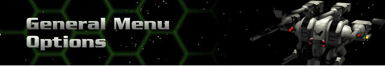

Click on the animation in this screen to rotate through all of the Hercs and Cybrids.
Single Player
Takes you to the Single Player Menu for more options.
Multi Player
Takes you to the Multi-Player Menu for more options.
View Intro
Sets the mood with a brief 3-D cinematic sequence.
View Credits
Lists all of the people whose efforts made Cyberstorm possible.
Exit Game
Allows you to leave the Cyberstorm Universe.